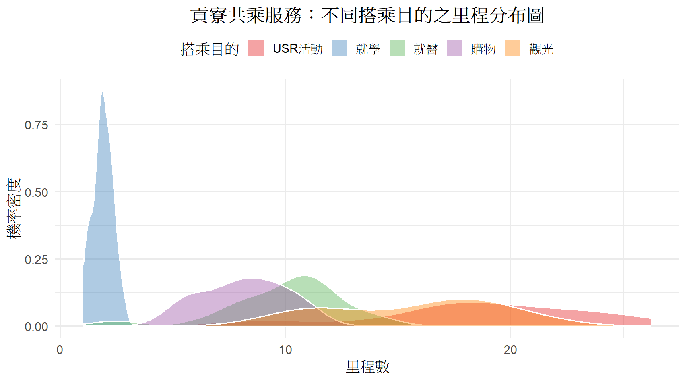

library(tidyverse)
library(ggplot2)
# 設定隨機種子確保每次 Build 網頁圖都一樣
set.seed(42)
# 1. 定義五種目的的參數（平均值與推導出的標準差）
purposes_config <- tibble(
purpose = c("就學", "購物", "就醫", "觀光", "USR活動"),
mu = c(2, 8, 10, 15, 18),
sigma = c(0.4, 2.0, 2.5, 4.5, 3.6),
n = c(20, 20, 20, 20, 20) # 每種目的各生成 100 趟車次
)
# 2. 隨機生成常態分布數據
simulated_purposes <- purposes_config %>%
group_by(purpose) %>%
do(tibble(
# 使用 mapply 針對每組的 mu 和 sigma 生成常態分布數值
social_value = rnorm(.$n, mean = .$mu, sd = .$sigma)
)) %>%
ungroup()
# 確保生成的社會價值不會出現不合理的負數（若有微量負數則強制歸零）
simulated_purposes <- simulated_purposes %>%
mutate(social_value = if_else(social_value < 0, 0, social_value))
# 3. 繪製不同目的之彩色密度分布圖
ggplot(simulated_purposes, aes(x = social_value, fill = purpose)) +
geom_density(alpha = 0.4, color = "white") + # alpha 設定半透明，方便看疊加部分
scale_fill_brewer(palette = "Set1") + # 使用高質感的 Brewer 顏色調色盤
theme_minimal(base_size = 14) +
labs(
title = "貢寮共乘服務：不同搭乘目的之里程分布圖",
x = "里程數",
y = "機率密度",
fill = "搭乘目的"
) +
theme(
text = element_text(family = "Arial Unicode MS"), # 確保中文字型在網頁完美顯示
legend.position = "top",
plot.title = element_text(face = "bold", hjust = 0.5),
plot.subtitle = element_text(hjust = 0.5, color = "gray40")
)
library(DT)
# 在網頁上呈現互動式表格
datatable(simulated_purposes,
options = list(pageLength = 10, searchHighlight = TRUE),
colnames = c("搭乘目的", "各自里程數"),
caption = "表 4.1：隨機生成之各搭乘目的車次資料庫（共100筆）")